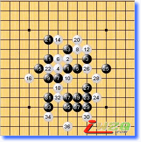
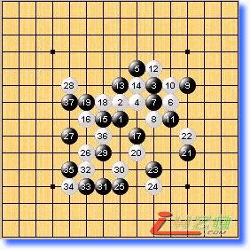
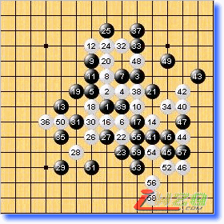
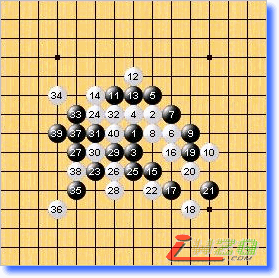
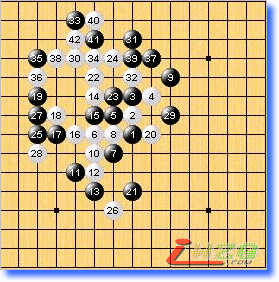

第十届世锦赛A组第一轮略评
#1 第十届世锦赛A组第一轮略评 作者：有志青年 发表时间：2007-8-11 10:14:06
第一局 黑方 吴镝 白方 chingin 黑胜
此盘吴镝残月执黑速胜先声夺人，这个开门红相信会引起其他棋手的高度重视。反观chingin对残月定式似乎还停留在老式教科书中，看来功课做的不够。远的不说，翻翻orc的对局库里面就有关于这个15的下法，并且胜法与本局如出一辙。

第二局 黑方 Sushkov 白方 Taimla 黑胜
Sushkov是我看好的棋手，本局白方求胜心切，将局面导入复杂攻防，实战效果并不好。20早早转入防守，22又过于用强，28后局面崩溃。

第三局 黑方 Savrasova 白方 okabe 和棋
几乎没几步棋已经进入和棋套路，乏味的一局。

第四局 黑方purk 白方 Yamaguchi（山口） 白胜
山口信奉快乐连珠的理念，看他下棋感觉很轻松。不知道黑方是有意为之还是真的自信爆棚，这局到16手上届世锦赛中，山口执白在预赛与台湾棋手较量过此变化，我还写过比较详细的点评。黑19的下法如白棋对应正确，黑棋很难防。还好，山口的22非最强下法，即便如此整局黑没丁点机会，最终忙乱出错。

第五局 黑方 oll 白方 lio 和棋
银月少见的黑5，大概oll想靠中盘的力量将老将斩于马下。可惜，lio防守很顽强黑棋并未觅得很好的机会。lio在日本虽然并非顶尖棋手，但很勤奋并且具备日本老棋手的良好素质，这次比赛目前来看状态很好，应该会有不错的名次。

第六局 黑方 Karlsson 白方 Kozhin 白胜
寒星这个4三打都必胜了。虽然过去这个4有盘端问题，就算黑棋不懂正确的下法，也有多种很强的应对，唯独这个7难以理解用意所在。kozhin完胜的一局。
